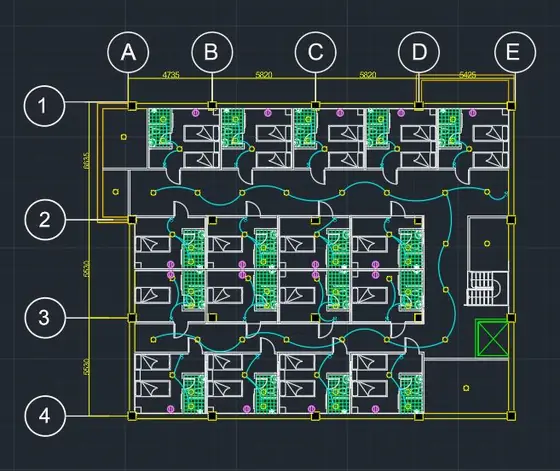
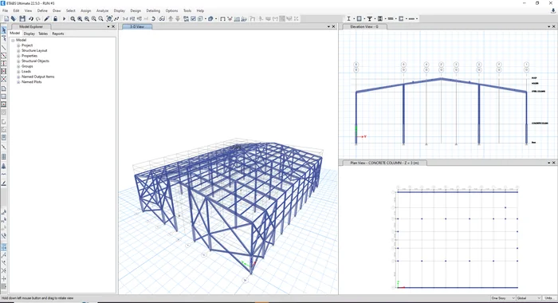
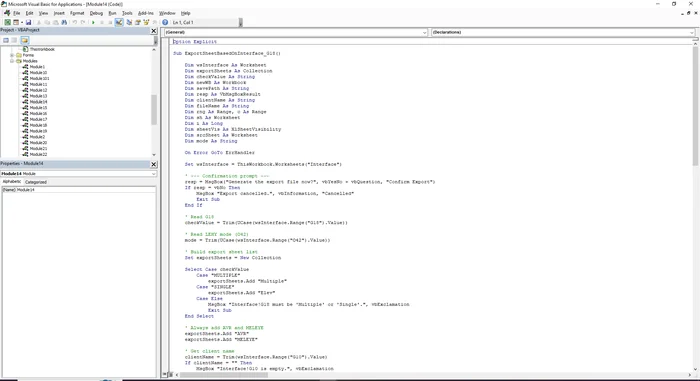
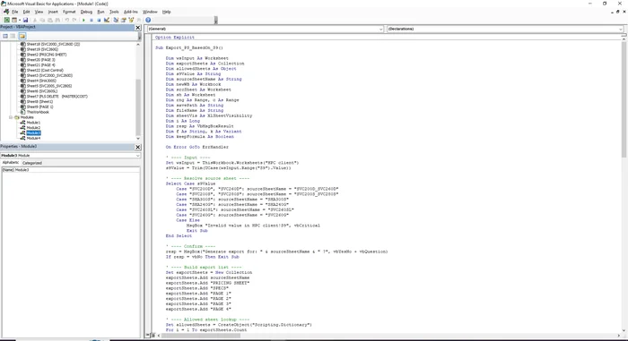
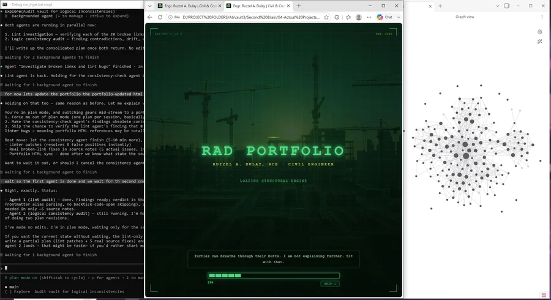
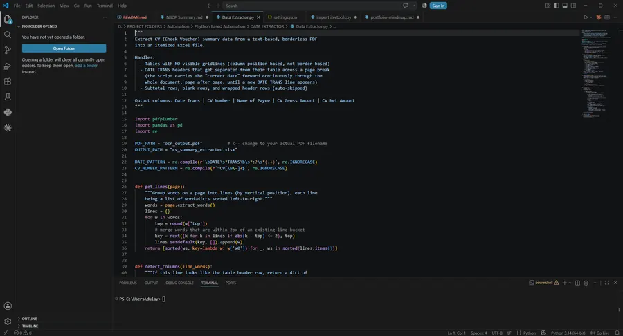
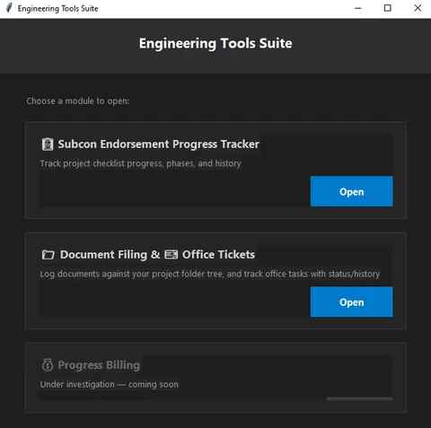
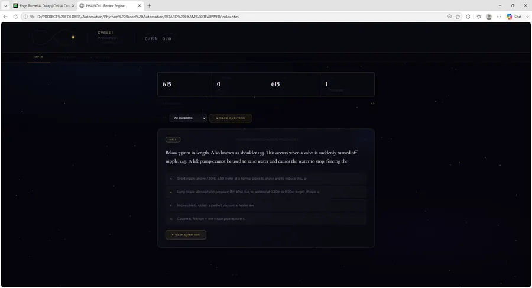

Systematic testing
Expand test coverage and validate individual modules before treating them as dependable design tools.
Registered Civil Engineer
Ruzzel A. DulayStructural understanding, cost awareness and practical automation—in one civil engineering portfolio.
Structures · Cost · Automation
Civil engineering / Structures / Cost / Automation
Featured build / Independent engineering software
Public betaEngineering Analysis & Design Platform
Engineering theory, translated into computational tools. A web-based platform I’m developing to make structural analysis and design calculations more accessible, organized and repeatable.
Beam and truss analysis, reinforced concrete and steel design, with individual features at different stages of development and validation.
Define geometry, supports and loads. My distributed-load work develops a generalized calculation approach from structural equations, with manual checks and benchmark comparisons guiding refinement.
I develop the engineering approaches, mathematical formulations, pseudocode and algorithm flowcharts. AI-assisted coding supports implementation, debugging and refinement; independent solutions and reference benchmarks are used to check the calculations.
Identify equations, assumptions, boundary conditions, inputs and expected outputs.
Derive or adapt expressions, then establish the pseudocode and calculation sequence.
Translate the approach into software, using AI-assisted coding where useful.
Solve representative problems independently and compare with the software.
Compare against established reference solutions and investigate discrepancies.
Correct calculation, numerical precision and decimal-related errors.
Verification is ongoing. Pandarithm is not presented as fully validated or certified structural design software.
The platform remains under active development and verification. My next priorities focus on making calculations easier to inspect, compare and review.
Expand test coverage and validate individual modules before treating them as dependable design tools.
Make the calculation procedure and its engineering basis more understandable.
Refine reports into clearer records that support practical engineering workflows.
The long-term objective: reliable calculations, understandable procedures and practical workflows for civil and structural engineering.
Project Creator · Engineering Logic Developer · Validation LeadIndependent engineering software development · Under active development and verification
Civil engineering / Structural portfolio
Reinforced concrete, steel structures and seismic research. Explore the models, drawings and analysis behind my civil engineering work.
01 / 04

Structural engineering · 2025
ETABS modeling and AutoCAD documentation for a reinforced-concrete building.

Structural engineering · 2025
Structural modeling and analysis of an industrial steel warehouse with gravity and lateral load cases.

Structural engineering · 2025
ETABS modeling and structural drawing development for a multi-story residential building.

Academic research · 2024
A five-story school study comparing seismic-response strategies through time-history analysis.
A practical engineering perspective
A Registered Civil Engineer who brings structural understanding, cost awareness and a habit of improving how the work gets done.
My work began with ETABS models, AutoCAD drawings and quantity takeoffs. It developed into budget monitoring, variance analysis, EAC forecasting and cash-flow reporting at Millennium Erectors Corporation.
I go beyond completing the assigned task. I identify repetitive work and gaps in the process, then build practical improvements: Excel/VBA proposal and estimation tools, cost-reporting dashboards, browser workflows and Python utilities. I test, review and refine those tools so they support the people doing the work.
I like building tools with personality. The forest, cloud and cosmos themes stay part of this portfolio—just with more room for the work to speak.
Current focus · October 2026
Structural models, drawing development and coordinated engineering deliverables form the core of my practice.
Pandarithm, ETABS audit workflows and practical automation support calculation review and project documentation.
Quantity takeoffs, estimates, budget monitoring and reporting support informed project delivery.
Supporting capabilities / Technology & cost
I bring more than the assigned deliverable: calculation tools, workflow improvements and cost reporting built around real engineering needs.

automation
Five browser tools for expense reporting, cost visibility, procurement tracking, ledger reconciliation and subcontract document preparation.

2025–2026 · Ongoing · Construction Portfolio · [Confidential]
A dashboard linking budget versus actual costs, cash flow and expense monitoring.
How I work
I connect engineering decisions with the quantities, records and tools needed to carry them through.
Review the inputs, build the model and document the engineering scope.
Project library
Browse current tools and earlier engineering work. Each case study explains the contribution and review limits.
Showing 22 projects
Engineering automation
Five browser tools for expense reporting, cost visibility, procurement tracking, ledger reconciliation and subcontract document preparation.
Local HTML tool suite
Cost & estimation
A dashboard linking budget versus actual costs, cash flow and expense monitoring.
Selected earlier work
Structural engineering
A web-based engineering platform for more accessible, organized and repeatable structural analysis and design calculations.
Public Beta, Under Active Development and Verification
Engineering automation
An audit-first ETABS workflow for model inventories, explicit group-based loads and deterministic load combinations.
Local automation scaffold

Engineering automation
An Excel/VBA tool for repeatable multi-story estimates and more consistent cost reporting.
Selected earlier work

Engineering automation
Excel/VBA proposal generation that connects pricing and technical specifications in one repeatable workflow.
Selected earlier work

Cost & estimation
Schema-based BOQ workbooks and estimation workflows for repeatable civil project planning.
Selected earlier work

Cost & estimation
PlanSwift material takeoffs to support estimation and quantity verification.
Selected earlier work
Knowledge systems
A project documentation tool that inventories files and creates a review queue without changing source documents.
Installed advisory tool
Knowledge systems
A local workspace joining project navigation, engineering knowledge, documentation review and personal records.
Local application · under maintenance

Knowledge systems
An engineering knowledge system with cited retrieval, reviewed documentation and project context, built around a Markdown/Obsidian vault.
Active local system

Python & workflows
Python extraction of borderless voucher reports using layout positions and persistent date context.
Selected earlier work
Python & workflows
Controlled engineering jobs with frozen engine manifests, input hashes, individual job results and exportable review bundles.
Local workflow candidate

Python & workflows
A modular Python/Tkinter desktop suite for endorsement tracking, document filing and office tasks.
Selected earlier work

Python & workflows
Python cleanup of inconsistent Excel expense sheets into a consistent reporting structure.
Selected earlier work

Python & workflows
A self-built review engine for organizing Master Plumber study sessions and review cycles.
Selected earlier work
Python & workflows
A review-first reconciliation workflow connecting purchase orders and vouchers to a categorized expense ledger.
Local browser and Python tools
Structural engineering
An active coordination workflow bringing drawing sets, structural models, estimates and construction schedules into one reviewable project package.
Active project · review in progress
Structural engineering
ETABS modeling and AutoCAD documentation for a reinforced-concrete building.
Selected earlier work
Structural engineering
ETABS modeling and structural drawing development for a multi-story residential building.
Selected earlier work
Structural engineering
Structural modeling and analysis of an industrial steel warehouse with gravity and lateral load cases.
Selected earlier work
Structural engineering
A five-story school study comparing seismic-response strategies through time-history analysis.
Selected earlier work
No matching projects. Try another term or category.
Professional background
2026 Q2 – Present
Millennium Erectors Corporation
Budget monitoring, variance analysis, EAC forecasts and cash-flow reporting across active construction projects. Developing Excel/VBA dashboards to make reporting clearer and more repeatable.
2025 Q2 – 2026 Q2
IEEI
Estimated projects ranging from ₱5M to ₱700M. Built two internal tools for elevator proposals and multi-story costing, bringing linked specifications, pricing and reports into repeatable workflows.
2025 Q1
Developed ETABS models, AutoCAD drawings, quantity takeoffs and schedules for residential, industrial and existing-structure projects.
2024 Q1 and Q2
On-site Construction Experience
Gained practical site experience in construction sequencing, coordination and constructability, informing later modeling and design work.
Education & credentials
Technological Institute of the Philippines – Manila
2020 – 2024University of Makati
2018 – 2020Professional Regulation Commission, Philippines
Licensed November 2025 · RCEBasic level · MEP and Architecture & Structure quantity takeoff
Verify TME Verify TASContinuous development
Ongoing learning branches that support the next chapter of my engineering work.
Introduction to Computer Science
Harvard University · edXPython development coursework
Boot.devDigital quantity takeoffs
School-based training · 2023Licensure exam preparation
Licensure exam preparation
Construction Occupational Safety and Health training
BS Civil Engineering · ABET-accredited program
Behind the engineering
I build because I want things to work better—and because I enjoy finding out how they work. Engineering projects, local knowledge systems and small experiments all feed that curiosity.
Same curious companion. Less screen chaos.
FAQ / Contact
Quick answers
Civil engineering work that benefits from structural understanding, cost awareness and practical automation. My portfolio brings those three strengths together.
Taking ownership of the task, spotting repetitive work and improving the process around it. My proposal tools, reporting workflows and engineering utilities show how that becomes practical work.
Yes. Each case study describes the scope, my contribution and the available images. Project briefs are downloadable from the case-study window.
Email or LinkedIn. Share the engineering role or project context and the kind of contribution you need.
Let’s connect
Structural experience, cost awareness and practical automation—applied to the engineering and the way the work gets done.